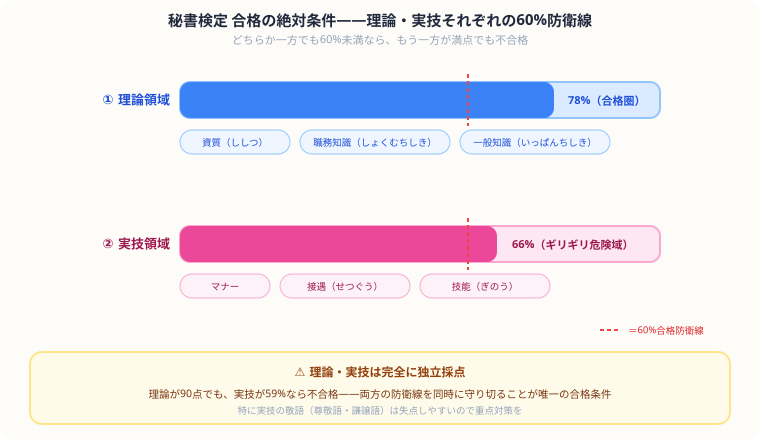

秘書検定2級・準1級の独学合格ガイド【2026年版】
大
大谷 一輝 より
こんにちは、大谷です！
就活の面接やインターンを意識してビジネスマナーのテキストを開いた瞬間……「うわっ、なんじゃこりゃ、尊敬語と謙譲語の使い分けや、お辞儀の角度、電話応対のルールが細かすぎて頭パンクするわ！」とフリーズしていませんか？（笑）
現役の就活世代である僕の視点から、面接官に「この学生、マナーの基礎が完璧だな」と一瞬で好印象を与えて無双するための【秘書検定2級・最速独学逆算スケジュール】を優しくナビゲートします！
また、記事の末尾のほうにある【いいねボタン】のプッシュをお願いします！
秘書検定の勉強を始めたんですけど、尊敬語・謙譲語・丁寧語がごちゃごちゃで、しかも記述問題まであって……正直丸暗記じゃ絶対に間に合わない気がしてます。
その感覚、正解です！実はこの試験、ただの暗記ゲームだと思ってると普通に落ちます。理論と実技の両方で【60%の防衛線】を同時にクリアしないと足切りになる、れっきとしたパズルゲームなんだよ。片方が満点でも、もう片方が59%なら即アウトになる仕組みなんだ。
え、そんなにシビアなんですか……特に実技の敬語がもう訳分からなくて。
敬語はコツさえ掴めば一瞬で解けるようになるよ。ポイントは、自分がへりくだるのか（謙譲語）、相手を高めるのか（尊敬語）を脳内でハコ分けして解くこと。「主語が自分側→謙譲語の箱」「主語が相手側→尊敬語の箱」、このシンプルな仕分けだけで記述問題も一気に得点源に変わるからね！
秘書検定の級別比較
| 級 | レベル感 | 合格率 | 勉強時間 | 試験形式 |
|---|---|---|---|---|
| 3級 | ビジネス基礎 | 65〜70% | 30〜50時間 | 筆記のみ |
| 2級 | 一般職・新卒向け | 55〜60% | 50〜80時間 | 筆記のみ |
| 準1級 | 秘書職・中級 | 35〜45% | 100〜150時間 | 筆記＋面接 |
| 1級 | 上級秘書 | 25〜35% | 150〜200時間 | 筆記＋面接 |
試験の基本情報
| 項目 | 内容 |
|---|---|
| 試験回数 | 年3回（2月・6月・11月） |
| 受験資格 | なし |
| 受験料（2級） | 4,900円 |
| 合格基準 | 各領域60%以上 |
| 試験科目 | 理論（必要とされる資質・職務知識・一般知識）＋実技（マナー・接遇・技能） |
2級の出題内容と攻略法

理論領域（必要とされる資質・職務知識・一般知識）
秘書としての判断力・優先順位付け・文書の取り扱い方などが問われます。「秘書なら当然すべきこと」という感覚を養うことが重要。過去問で出題パターンを把握してから回答の方向性を固めましょう。
実技領域（マナー・接遇・技能）
敬語・電話応対・来客対応・文書作成が中心。敬語は「尊敬語・謙譲語・丁寧語」の使い分けを徹底的に練習。記述式問題もあるため、丸暗記ではなく文章で書ける練習が必要です。
準1級の面接対策：準1級には面接試験（ロールプレイング形式）があります。「上司への報告」「来客応対」などのシナリオを想定し、言葉遣い・態度・所作を練習することが合格への鍵です。模擬面接練習が有効です。
1〜2ヶ月の独学スケジュール（2級）
| 期間 | 内容 |
|---|---|
| 1〜2週目 | テキスト通読・ビジネスマナーの基礎インプット |
| 3〜4週目 | 過去問演習・敬語の集中練習 |
| 5〜8週目 | 記述問題の練習・弱点科目の反復 |
就職・転職での活かし方
- 一般事務・秘書職・受付・営業アシスタントへの就職で評価
- 面接でのビジネスマナー意識のアピールに有効
- 準1級以上は「秘書職・受付マネジャー」への転職で差別化になる
- サービス業・ホテル・航空会社などの接客系職種でも評価される
まとめ
- 2級は合格率55〜60%・勉強時間50〜80時間で独学十分可能
- 就活・転職の面接で「ビジネスマナーを体系的に学んだ」アピールになる
- 準1級は面接試験あり・難易度が上がるが差別化になる
- 簿記・PC資格との組み合わせで事務職への競争力が上がる
この記事が少しでも参考になったら……
就活で忙しい時期に、あえてビジネスマナーの勉強に一歩を踏み出せるあなたは、それだけで市場価値を高めようとしている最高の仲間です。理論・実技の防衛線を突破して、面接官に一目置かれる自分を手に入れましょう。
僕の執筆のモチベーション維持のために、この下にある【いいねボタン】をポチッと押してもらえると、めちゃくちゃ嬉しいです！
よくある質問（FAQ）
秘書検定は就職に有利ですか？
一般事務・秘書職・受付・営業職への就職で評価されます。特に2級はビジネスマナーの基礎を証明できる資格として、面接でアピールしやすいです。簿記・PCスキルとの組み合わせが効果的です。
秘書検定2級の勉強時間はどれくらいですか？
50〜80時間が目安です。1日1時間の学習で約2ヶ月かかります。ビジネス経験がある社会人はさらに短期間での合格も可能です。
2級と準1級どちらを受けるべきですか？
就活・転職目的なら2級で十分です。準1級は面接試験があり難易度が上がりますが、秘書職・ハイレベルな一般職を目指す方には準1級取得が差別化になります。